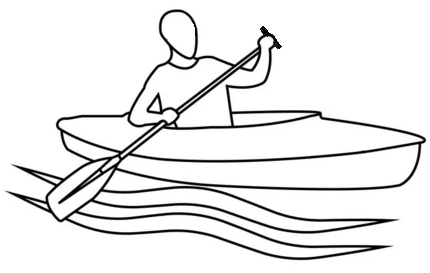

Oru Canoe
Oru Canoe пропонує інноваційні складні каное, які поєднують портативність, довговічність та зручність використання. Ці каное, натхнені орігамі, складаються до компактного розміру, що дозволяє легко транспортувати їх, ідеально підходять для пригодників, які часто подорожують. Ору має кілька моделей, кожна з яких орієнтована на різні потреби — від початківців до тих, хто шукає універсальний човен для різних умов води. Ору Каное, як і їх каяки, виготовлені з міцного поліпропілену, стійкого до проколів, що дозволяє їм витримувати тисячі складань без пошкоджень. Процес складання швидкий і зручний, зазвичай займає менше 10 хвилин і не потребує інструментів. Це робить їх особливо привабливими для тих, хто хоче витрачати більше часу на воді і менше часу на підготовку. Одна з популярних моделей, Oru Haven TT, розрахована на дві особи, має велику кількість місця для зберігання та забезпечує відмінну стабільність, що робить її чудовим вибором для сімейних виїздів або риболовлі. Вона має регульовані сидіння, міцну конструкцію та здатність витримувати до 500 фунтів вантажу. Загалом, Oru Canoe вирізняються своєю портативністю, міцністю та легкістю у використанні, що робить їх відмінним вибором для тих, хто шукає надійне складне каное для спокійних вод.
